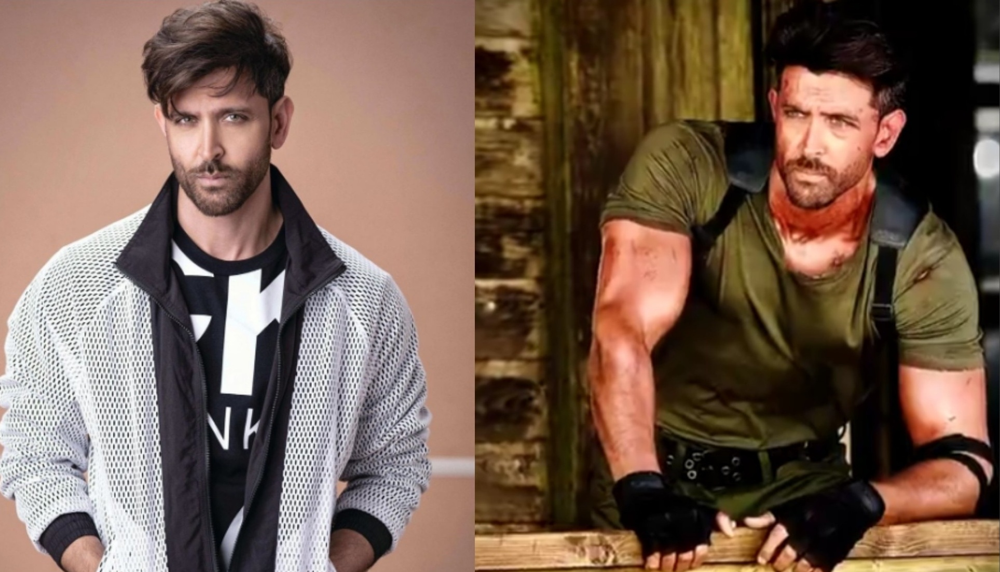
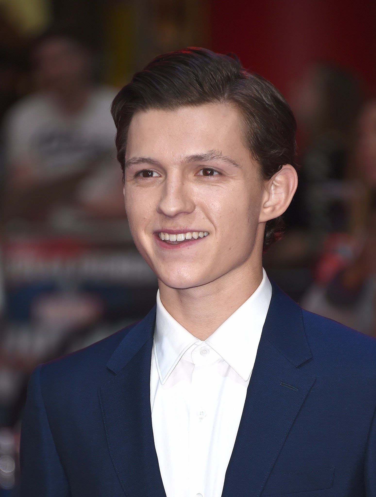
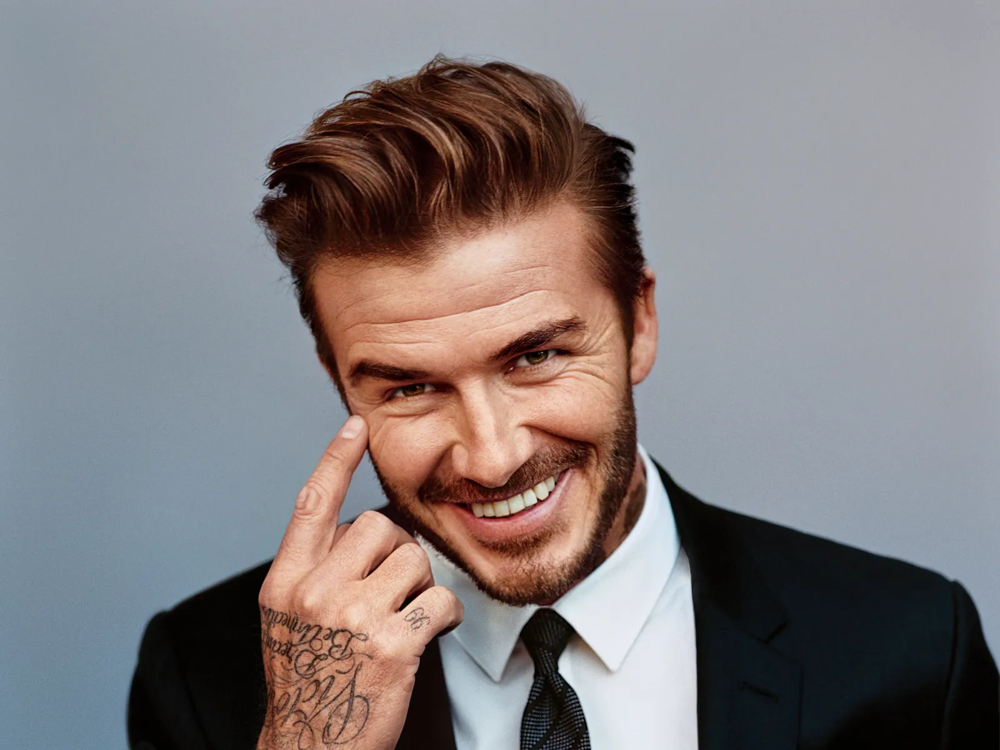
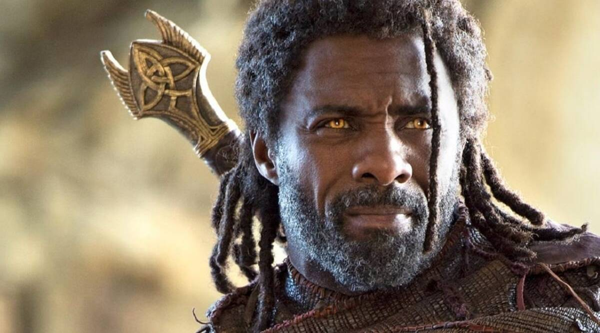
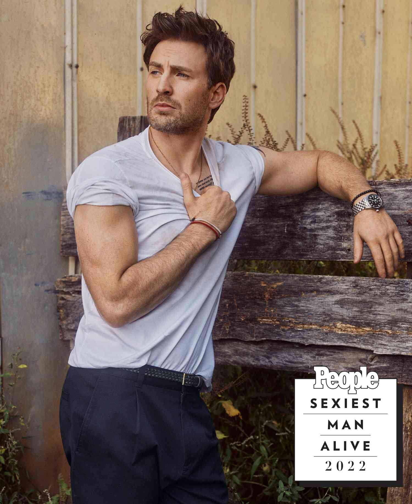
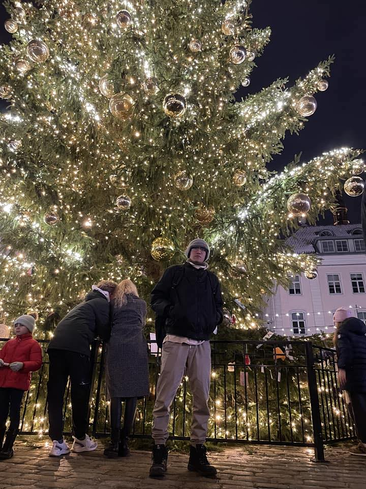
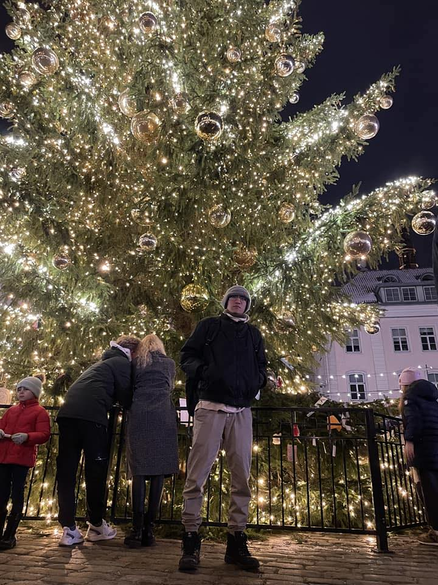

Most Handsome Man in The World – Top 10 List (UPDATED 2023) can be checked from here with names and bio. There is a lot of brilliance and beauty in the world, but the reality is that a lot of guys are so gorgeous that they will make you lose your ability to express yourself. They are not only attractive but also brilliant and accomplished. Because of their incredible magnetism, no one can adequately explain how they seem. After researching the internet, we came up with a list of the top ten Most Handsome Man in The World. Their appearance is so endearing that you won’t resist falling in love with their charming personalities.
Most Handsome Man in The World
Top 10 Most Handsome Men
-
#1. Robert Pattinson
Most people know Robert Pattinson best for his role as Edward Cullen in the Twilight film series, yet, he is one of Hollywood’s most diverse performers. Robert Pattinson’s facial structure has been discovered to be 92.15 percent correct, proving he is at the top of the list of the World’s Most Handsome Men in The World.
- #2. Hritik Roshan
There is not the slightest doubt that Hritik Roshan 2023 deserves to be in the top 10 list of the world’s most gorgeous people, just as Hritik Roshan now is. Because of his good striking features, particularly the extraordinary beauty of his eyes, he gets compared to a Greek deity.
 - #3. Kim Tae-Hyung
Kim Tae-Hyung is not just an actor but also a singer, songwriter, and record producer. It was in the Seo District of Daegu, South Korea, where he was born. He began his career as a musician in 2013, and he has since written several songs that have been popular, including “Sweet Night 4 O’Clock,” “Even If I Die It’s You,” “Scenery,” and many more.
- #4. Tom Holland
Thomas Stanley Holland was born in 1996 and began his career as an actor at a very early age at THEATRE West End in London. Thomas Stanley Holland is an actor.
 - #5. David Beckham
If you like football, you must also like David Beckham, a famous football player. David Beckham is one of the world’s most desirable football players. A significant accomplishment for David is the fact that he has scored more than one hundred goals while playing for the Manchester United club.
 - #6. Idris Elba
Idris Elba was given the title of “Sexiest Man Alive” by People Magazine in 2018, and many other publications have put him on their lists of the world’s most gorgeous men for the year 2023.
 - #7. Justin Trudeau
In addition to being the current Prime Minister of Canada, Justin Trudeau holds the record for being the second youngest Prime Minister of Canada, after only Joe Clark. Not only does he have a lovely face, a friendly smile, and a charming attitude, but he is also a great guy who is well-known for his love for his fellow humans.

- #8. Bradley Cooper
People magazine has named Bradley Cooper to their “Sexiest Man Alive” list on many occasions, and our ranking places him in the top 10 most gorgeous men in the world. Cooper rose to prominence on a global scale after making an appearance in “The Hangover Film.”

- #9. Chris Evans
It is impossible to compile a list of the world’s 10 most gorgeous men in 2023 without including Chris Evans, also known as Captain America. Evans received fame for his Steve character in MCU movies.
 - #10. Nhan Tran
Nhan Tran is one of the most famous person on over the world. He is from Vietnam and He is famous about his ability of studying chemistry which is very well. Specially, he is also very handsome so He has many beautiful girlfriends who is also celebrity. That's an interesting thing of his. He is becoming one of the best coder of Finland (software engineering)
 
